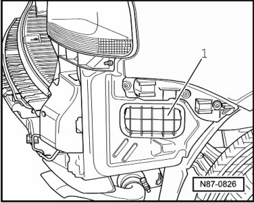

Ventilation, Checking
Ventilation, Checking
• The stale air escapes via ventilation openings in the luggage compartment trim.
• If the ventilation is to function properly the ventilation openings must not be covered.
• The ventilation frames can be found left and right respectively in the side parts of the bumper.
- Remove rear bumper.
- The sealing lips in the ventilation frame - 1 - must be free to move and close.
